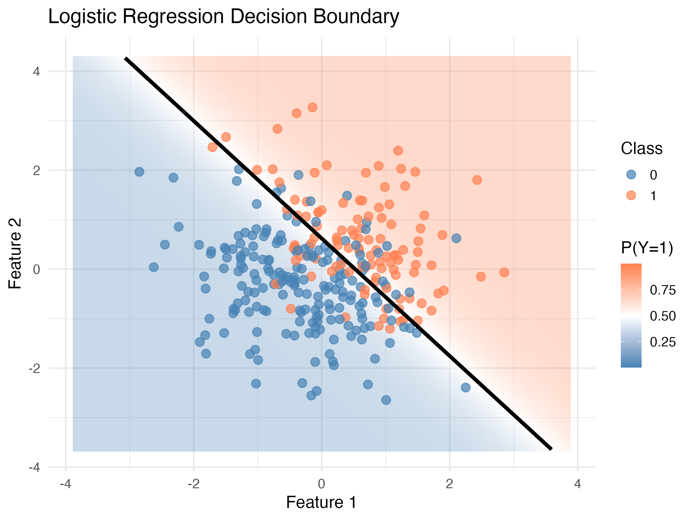
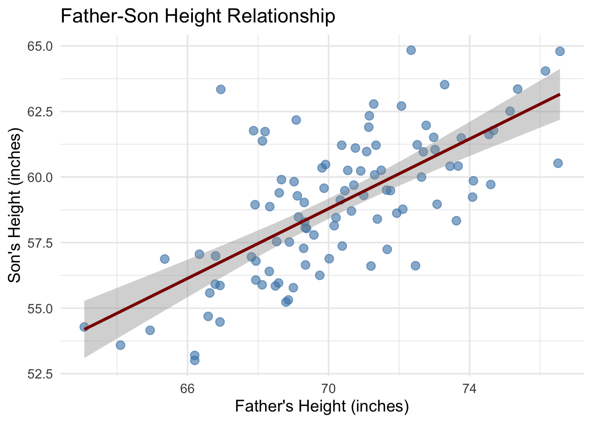
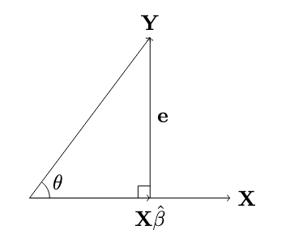
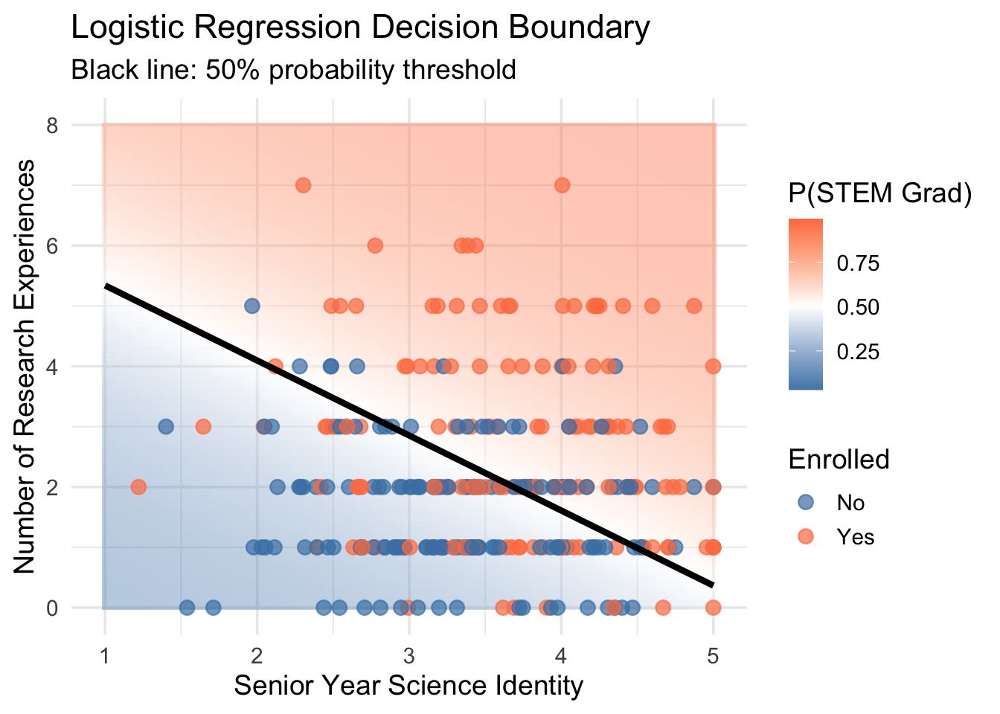

Machine learning begins with a simple yet profound idea: predicting one thing from another. This chapter explores how we can build increasingly sophisticated models, starting from the humblest linear regression to more complex piecewise linear models and classification algorithms.
The beauty of regression lies not just in its mathematical elegance, but in how it provides a unified framework for understanding modern machine learning. As we’ll see, concepts like loss functions, gradient descent, and overparameterization, which are central to deep learning, emerge naturally from classical regression.
In this tutorial, we will cover: (1) Simple Linear Regression, (2) Multiple Linear Regression, and (3) Logistic Regression.

1. Simple Linear Regression (One predictor, one outcome)
1.1 The Basic Setup
Let’s start with the classic father-son height prediction problem. We have data pairs \((x_i, y_i)\) where:
\(x_i\) = father’s height
\(y_i\) = son’s height
Our goal is to find a linear relationship:
\[s_i = \beta x_i\] where \(s_i\) is our predicted son’s height and \(\beta\) is the parameter we need to learn.
Code
# Generate synthetic father-son height dataset.seed(123)n <-100fathers_height <-rnorm(n, mean =70, sd =3)sons_height <-0.7* fathers_height +rnorm(n, mean =10, sd =2)height_data <-data.frame(father = fathers_height, son = sons_height)library(ggplot2)ggplot(height_data, aes(x = father, y = son)) +geom_point(alpha =0.6, size =3, color ="steelblue") +geom_smooth(method ="lm", se =TRUE, color ="darkred", linewidth =1.2) +labs(title ="Father-Son Height Relationship", x ="Father's Height (inches)", y ="Son's Height (inches)") +theme_minimal(base_size =14)

1.2 Loss Function and Optimization
To find the best \(\beta\), we define a loss function that penalizes prediction errors:
This can be rewritten as: \[\beta^{(t+1)} = \beta^{(t)} + \eta\sum_{i=1}^{n} x_i e_i^{(t)}\]
where \(e_i^{(t)} = y_i - x_i\beta^{(t)}\) is the error at iteration \(t\).
Intuition:
If \(e_i > 0\) (under-prediction), we increase \(\beta\)
If \(e_i < 0\) (over-prediction), we decrease \(\beta\)
The magnitude of correction is proportional to both \(x_i\) and \(e_i\)
1.3 Geometric Interpretation
In vector notation, \(\hat{\beta}X\) represents the projection of \(Y\) onto \(X\). The error vector \(e = Y - X\hat{\beta}\) is perpendicular to \(X\).

Note
The correlation coefficient equals \(\cos(\theta)\).
Decision boundary: When \(s_i = 0\), \(p_i = 0.5\)
Derivative:\(\frac{dp_i}{ds_i} = p_i(1 - p_i)\)
Note
The Logit Transformation: The inverse of the sigmoid is the logit function: \[s_i = \log\left(\frac{p_i}{1 - p_i}\right) = \text{logit}(p_i)\] This is why logistic regression is sometimes called “logit regression.”
3.2 Likelihood and Gradients
3.2.1 Maximum Likelihood Estimation
For classification, we use cross-entropy loss (negative log-likelihood) instead of squared error.
Why not squared error? Squared error works poorly for probabilities—it doesn’t penalize confident wrong predictions enough.
The Likelihood for a Single Observation:
A key insight is that we can write the likelihood compactly as:
grid_resolution <-100x1_grid <-seq(1, 5, length.out = grid_resolution)x2_grid <-seq(0, max(grad_data$research_experiences) +1, length.out = grid_resolution)grid_points <-expand.grid(senior_identity = x1_grid, research_experiences = x2_grid)# Predict probabilities using glm modelgrid_probs <-predict(model_glm, newdata = grid_points, type ="response")grid_points$prob <- grid_probsggplot() +geom_tile(data = grid_points, aes(x = senior_identity, y = research_experiences, fill = prob), alpha =0.4) +geom_point(data = grad_data, aes(x = senior_identity, y = research_experiences, color = stem_grad_factor), size =3, alpha =0.7) +scale_fill_gradient2(low ="steelblue", mid ="white", high ="coral", midpoint =0.5, name ="P(STEM Grad)") +scale_color_manual(values =c("steelblue", "coral"), name ="Enrolled") +geom_contour(data = grid_points, aes(x = senior_identity, y = research_experiences, z = prob), breaks =0.5, color ="black", linewidth =1.5) +labs(title ="Logistic Regression Decision Boundary",subtitle ="Black line: 50% probability threshold",x ="Senior Year Science Identity",y ="Number of Research Experiences" ) +theme_minimal(base_size =14)

4. Summary: The ML Roadmap
We’ve journeyed from simple to increasingly sophisticated models:
Concept
Key Insight
Why It Matters
Linear Regression
Minimize MSE via gradient descent or closed form
Foundation for all optimization
Loss Functions
Quantify prediction error
Central to all ML training
Gradient Descent
Iteratively minimize loss
Works when closed-form doesn’t exist
Multiple Regression
Matrix operations scale to many features
Basis for neural network layers
Logistic Regression
Sigmoid transforms linear → probability
Building block for classification
Cross-Entropy Loss
Proper loss for classification
Standard in deep learning
Note
Three Key Principles in ML:
Everything is optimization: Find parameters that minimize a loss function
Gradients guide learning: Derivatives tell us how to improve
The form is universal: gradient = \(-\sum\) (input × error)
This tutorial is based on lecture materials from STATS M276A Pattern Recognition and Machine Learning (UCLA), taught by Professor Ying Nian Wu in Winter 2026.